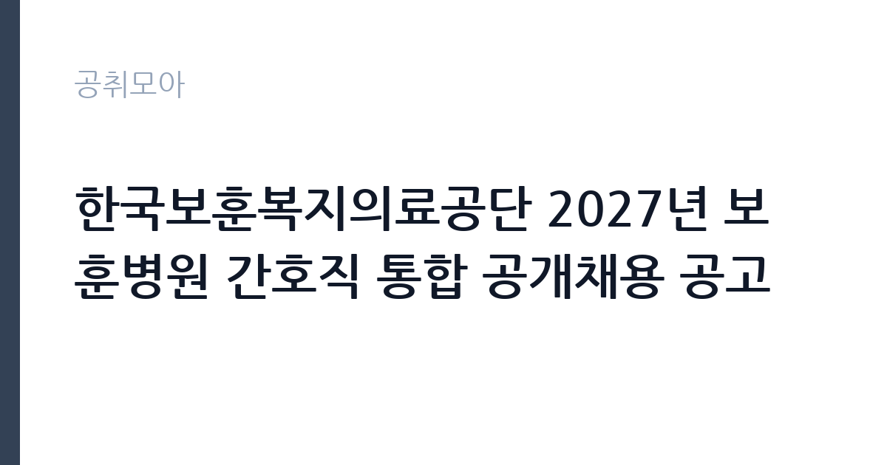

[공공기관] 한국보훈복지의료공단 2027년 보훈병원 간호직 통합 공개채용 공고
한국보훈복지의료공단 · 서울 · 마감 2026-10-07 (D-11) · 출처 잡알리오

한눈에 보는 모집 조건
| 기관 | 한국보훈복지의료공단 |
|---|---|
| 공고명 | 한국보훈복지의료공단 2027년 보훈병원 간호직 통합 공개채용 공고 |
| 고용형태 | 정규직 |
| 근무지 | 서울 |
| 게시일 | 2026-09-23 |
| 마감일 | 2026-10-07 (D-11) |
지원자격, 이렇게 읽으세요
- 공공기관 채용공시
- 세부 조건은 원문 공고문 확인
공통 지원자격은 지역과 나이, 성별에 제한이 없으며, 공고일 기준으로 정년인 만 60세 이상인 경우에만 지원하실 수 없습니다. 대한민국 국적을 보유하셔야 하고, 남성은 공고일 기준으로 군필 또는 면제자여야 합니다. 공단 인사규정의 채용 결격사유에 해당하지 않으셔야 합니다. 간호사 면허 소지자는 경력과 관계없이 지원하실 수 있으며, 2027년 초 간호사 면허 취득 예정자도 지원하실 수 있습니다. 다만 면허 취득 예정자가 2027년 초에 면허를 취득하지 못하시면 합격이 취소되므로 국가고시 일정을 반드시 확인하시기 바랍니다. 세부 지원자격은 첨부된 채용공고문에서 확인하시기 바랍니다.
이 공고의 포인트
이 공고의 강점은 세 가지입니다. 첫째, 면허 취득 예정자를 포함한 통합 채용이라 2027년 2월 졸업예정자가 미리 지원하실 수 있다는 점입니다. 둘째, 면허 소지자는 경력과 관계없이 지원하실 수 있어 재취업 간호사에게도 문이 열려 있다는 점입니다. 셋째, 공단이 2026년 상반기 공정채용 우수기관 인증을 받은 공공기관으로 직무역량 중심 블라인드 채용 기준을 엄격히 준수한다고 밝히고 있어 전형의 공정성이 제도적으로 뒷받침된다는 점입니다. 중앙보훈병원을 포함한 전국 6개 보훈병원에 배치되는 안정적인 공공병원 정규직이라는 점도 큰 장점입니다.
전형은 어떻게 진행되나
세부 전형 절차와 일정은 원문 공고문에서 확인하셔야 합니다. 공단의 간호직 채용은 일반적으로 서류전형과 필기전형, 면접전형의 순서로 진행됩니다. 전례를 보면 인천보훈병원 간호직 채용에서는 서류 합격자 발표 후 필기전형이 안내된 바 있습니다. 서류전형에서는 지원자격 충족 여부와 자기소개서를 평가하며, 필기전형에서는 간호 직무 지식과 인적성 요소를 확인합니다. 면접전형에서는 직무수행능력과 조직적합도를 평가합니다. 블라인드 채용으로 진행되므로 출신학교나 지역 등 인적사항이 평가에 반영되지 않습니다. 면허 취득 예정자는 면허 취득이 합격의 조건이므로 국가고시 준비와 전형 준비를 병행하셔야 합니다.
원문에서 확인한 전형 방식
<공통> ① 지역, 나이, 성별 등 제한 없음(단, 공고일 기준 정년(만 60세)이상인 자는 지원 불가) ② 대한민국 국적을 보유한 자 ③ 남성의 경우 군필 또는 면제자(공고일 기준) ④ 공단 인사규정 채용 결격사유에 해당하지 않는 자 <면허취득예정자> - 2027년 초 간호사 면허 취득 예정자(단, 2027년 초 간호사 면허 미취득시 합격 취소) <면허소지자> - 간호사 면허증 소지자(경력무관) * 보다 자세한 내용은 첨부파일의 채용공고문을 참고하여 주시기 바랍니다.
이런 분께 추천해요
- 2027년 2월 간호대학 졸업예정자로 국가고시와 취업을 함께 준비하시는 분께 적합합니다. 면허 취득 예정자도 지원하실 수 있기 때문입니다.
- 경력단절 후 재취업을 준비하시는 간호사분께 적합합니다. 면허 소지자는 경력과 관계없이 지원하실 수 있기 때문입니다.
- 수도권과 지방을 가리지 않고 공공병원 정규직을 희망하시는 분께 적합합니다. 전국 보훈병원에 통합 배치되는 공고이기 때문입니다.
지원 전 체크리스트
- 간호사 면허를 보유하고 계십니까. 취득 예정자이시면 2027년 초 취득이 가능한 일정을 확인하셨습니까.
- 대한민국 국적 보유와 남성 군필·면제 요건, 채용 결격사유 해당 여부를 확인하셨습니까.
- 전국 보훈병원 배치에 동의하십니까. 희망 병원 반영 방식은 원문 공고문에서 확인하십시오.
- 서류와 필기, 면접 전형 일정을 확인하고 국가고시 일정과 겹치지 않는지 점검하셨습니까.
모집 일정과 제출 타이밍
지원서 접수 마감은 2026년 10월 7일입니다. 이후 서류전형 합격자 발표와 필기전형, 면접전형을 거쳐 최종합격자가 결정됩니다. 면허 취득 예정자는 2027년 초 간호사 국가고시 일정과 전형 일정을 함께 관리하셔야 하므로 접수 기간부터 두 일정을 달력에 정리해 두시기 바랍니다. 접수 마감일에는 접속이 몰릴 수 있으므로 가급적 마감 2일 전까지 제출을 마치시는 편이 안전합니다.
직무 이해하기: 공공기관
보훈병원 간호사는 국가유공자와 보훈가족, 지역주민을 대상으로 진료 지원과 간호 서비스를 제공하는 직무입니다. 중앙보훈병원을 비롯한 부산·광주·대구·대전·인천 보훈병원에서 병동과 외래, 응급실, 중환자실 등에서 근무하시게 됩니다. 보훈병원은 국가유공자 진료라는 공공적 사명을 가진 특수목적 공공병원이면서 지역거점 공공병원 역할도 수행하고 있어 임상 경험의 폭이 넓습니다. 2024년 신축 개원한 치과병원과 재활센터 로봇치료실 등 특화 시설을 갖춘 병원에서 근무하실 수 있습니다. 교대근무가 기본이므로 근무 형태를 충분히 고려하시기 바랍니다.
자기소개서 작성 팁
자기소개서에서는 간호사를 선택한 동기와 보훈병원에서 근무하고자 하는 이유를 구체적으로 서술하시기 바랍니다. 실습 경험을 중심으로 본인이 직접 수행했던 간호 행위와 그 과정에서 배운 점을 제시하시면 됩니다. 국가유공자와 보훈가족에 대한 이해와 공공의료에 대한 관점을 담으시면 다른 지원자와 차별화되실 수 있습니다. 면허 취득 예정자는 국가고시 준비 과정에서 쌓은 지식 체계를 강점으로 제시하시고, 기졸업자는 임상이나 실습 경험을 중심으로 작성하시기 바랍니다. 블라인드 채용이므로 출신학교를 드러내는 표현은 피하시는 편이 안전합니다.
면접 준비 포인트
면접에서는 간호 직무 지식과 조직적합도가 핵심 평가 요소입니다. 환자 안전과 감염관리, 응급상황 대응에 대한 기본 지식을 질문받을 수 있으므로 실습 내용을 복습해 두시기 바랍니다. 보훈병원의 설립 목적과 공공적 역할에 대한 이해를 묻는 질문에는 국가유공자 진료라는 사명을 중심으로 답변하시기 바랍니다. 교대근무와 야간근무에 대한 의지, 팀 간호에서의 협업 경험을 구체적인 사례로 설명하실 수 있어야 합니다. 면허 취득 예정자는 합격 후 면허 취득 계획을 명확히 밝히시는 편이 좋습니다.
급여·근무조건 읽는 법
이 공고의 보수 조건은 원문 공고문에서 확인하셔야 하며, 이 글에서 확정 수치를 단정하지 않습니다. 공공병원 간호직의 보수는 호봉제 기본급에 야간·휴일 수당과 상여금이 더해지는 구조가 일반적이므로, 기본급과 각종 수당·상여의 구성을 원문 공고문과 공단 경영공시 자료에서 함께 확인하시기 바랍니다. 교대근무 부서에 배치되시면 야간근로수당 등이 추가될 수 있습니다. 수습 기간의 급여 지급 조건도 원문에서 확인하셔야 합니다.
자주 묻는 질문
- 2027년 졸업예정자도 지원할 수 있습니까.
지원하실 수 있습니다. 2027년 초 간호사 면허 취득 예정자는 지원자격에 포함됩니다. 다만 2027년 초에 면허를 취득하지 못하시면 합격이 취소되므로 국가고시 일정을 반드시 확인하시기 바랍니다. - 경력이 없어도 지원할 수 있습니까.
지원하실 수 있습니다. 면허 소지자는 경력과 관계없이 지원하실 수 있다고 공고문에 명시되어 있습니다. - 근무 병원을 선택할 수 있습니까.
전국 보훈병원에 통합 배치되는 공고입니다. 희망 병원 반영 방식과 배치 절차는 원문 공고문에서 확인하시기 바랍니다.
함께 보면 좋은 공고
[공공기관] [속리산] 속리산국립공원사무소 기간제(탐방해설) 직원 채용 재공고 — 마감 2026-10-08[공공기관] 발전공기업 통합실무지원단장 채용공고 — 마감 2026-10-08[공공기관] [설악산] 설악산국립공원 기간제 직원[환경관리(한시인력)] 채용 공고 — 마감 2026-10-01출처: 잡알리오 공개정보를 바탕으로 공취모아가 정리한 안내글입니다. 모집 조건·일정은 변경될 수 있으니 지원 전 반드시 원문 공고문을 확인하세요. 본 글은 정보 제공용이며 합격을 보장하지 않습니다.